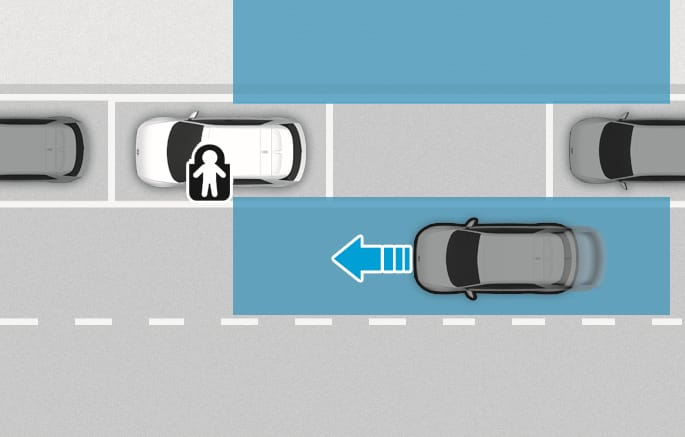

안전 하차 보조 (SEA)

안전 하차 보조 시스템은 하차 시 후측방 차량과 충돌하지 않도록 도와줍니다.
-
SEA는 Safety Exit Assist의 약자입니다.
-
사이드 미러 경고등이 깜빡이고 경고문과 경고음을 통해 충돌 경고를 알립니다.

2C_SideMirrorWaringLamp
시동을 껐다가 걸면 안전 하차 경고가 자동으로 설정됩니다. 설정 메뉴에서 선택 해제하여 기능을 끌 수 있으나, 이 경우 안전 하차 경고의 도움을 받을 수 없습니다. 항상 주의하여 운전하십시오.